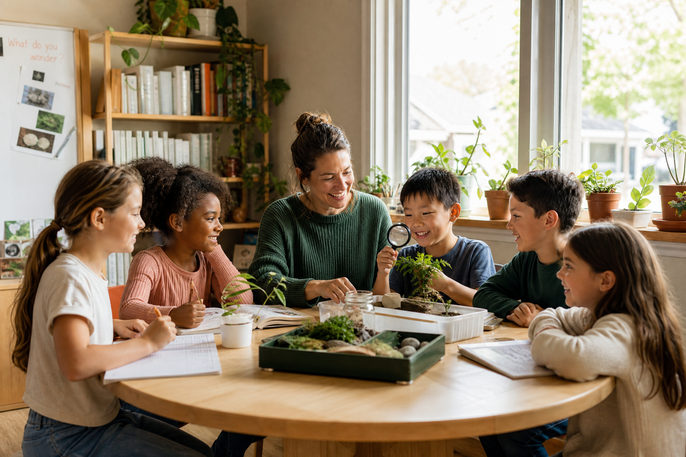
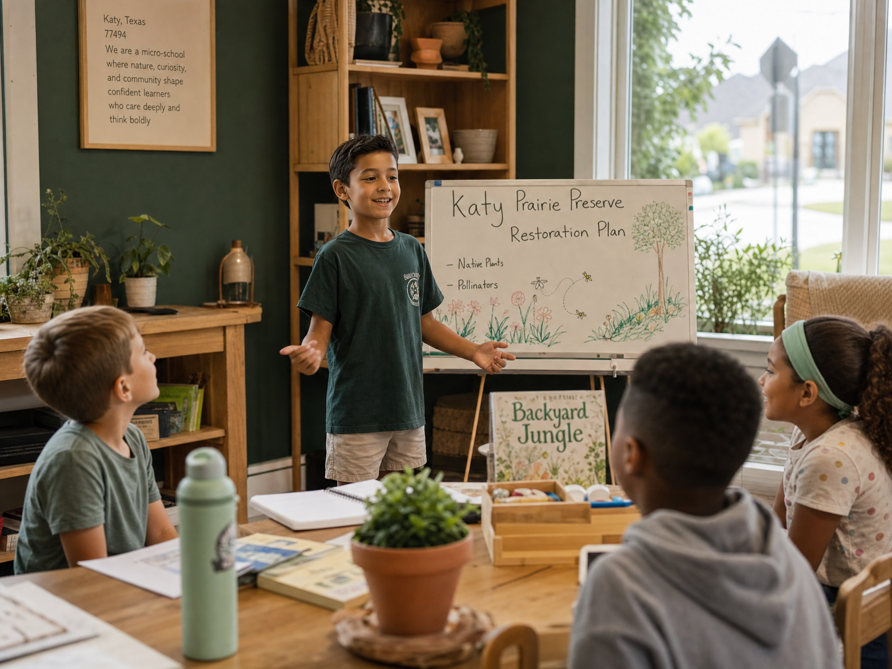
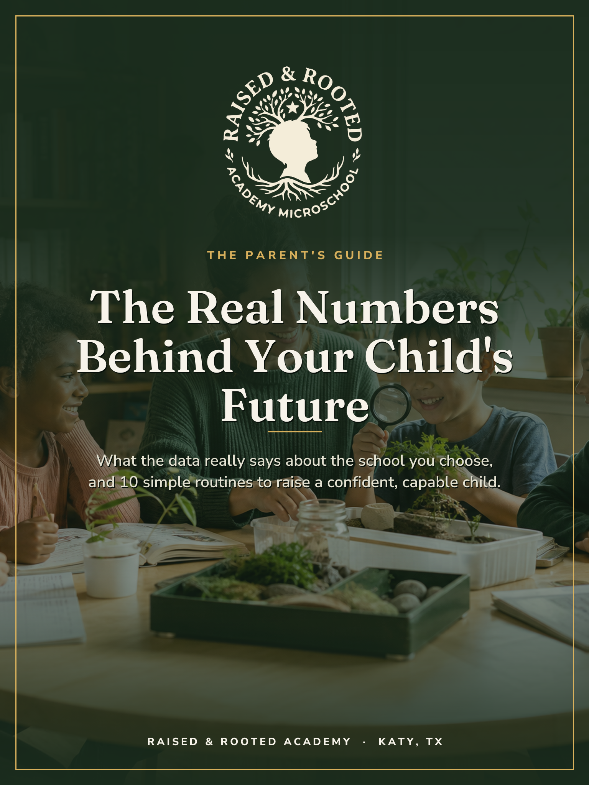

Raised & Rooted Academy is a small-by-design micro school in Katy. With just a handful of students per teacher, every child is challenged at their own level and taught the real-world skills the average classroom skips. Fewer kids. Deeper learning. A childhood that takes root.

The average classroom moves at the pace of the middle. The bright kids coast, the strugglers slip through, and almost everyone learns to stay quiet. We built the opposite of that.
Students one teacher manages in a typical public classroom, making personal attention a luxury, not the norm.
National Center for Education StatisticsShare of U.S. 8th graders scoring below proficient in reading on the national assessment.
NAEP, The Nation's Report Card, 2022A day your child spends inside a learning environment. Across 13 years, the environment is the outcome.
Avg. U.S. school day, NCESIt isn't only test scores. Decades of education research connect a child's learning environment to their confidence, their habits, and their long-term outcomes, and the size of that environment matters more than almost anything else.
| What matters to you | Typical Public Classroom | Raised & Rooted |
|---|---|---|
| Group size | 20–30+ students per teacher | ~6–10 students, low ratio |
| Pace of learning | Set to the middle of the room | Set to your child |
| Real-world skills (communication, finance, problem-solving) | ✗ Rarely taught directly | ✓ Built into the week |
| Is your child actually known? | Often one of dozens | Known by name, daily |
| Character & confidence | Incidental | Intentional & modeled |
| Family involvement | ✗ Limited | ✓ Partnership by design |
Percentile reached by the average student when taught one-to-one instead of in a conventional class, the famous "2 Sigma" effect of individual attention.
Bloom, Educational Researcher, 1984Additional progress, on average, that small-group tutoring adds over a single school year compared to ordinary instruction.
Education Endowment Foundation, small-group tuitionRoughly how much faster students can progress under high-dosage, small-group instruction in large-scale studies.
Nickow, Oreopoulos & Quan, NBER, 2020Want the full breakdown, including the lifetime-earnings and college-readiness data, with sources? It's inside the free guide. Get it here →
We pair rigorous academics with the human skills that actually predict a good life, taught in groups small enough that no child can hide and no child gets left behind.

Low student-to-teacher ratios mean lessons flex to each child, accelerating the ready and never leaving the others behind.
Clear communication, critical thinking, money sense, and problem-solving, the skills life actually demands, practiced weekly.
Children advance when they truly understand, not when a pacing calendar says to move on. Depth over box-checking.
Confidence, kindness, responsibility, and resilience are modeled every day, the roots that hold steady for a lifetime.
You're not handing your child off. Parents are partners, looped in, listened to, and part of the plan.
We prepare children for a world that rewards adaptability, creativity, and self-direction, not just the right worksheet answer.
We pulled the research into one clear, no-jargon guide, so you can make that decision with your eyes open.

Start with the free parent guide. See the research for yourself, get 10 routines you can use tonight, and find out if Raised & Rooted is the right soil for your child.
Get the Free Parent Guide